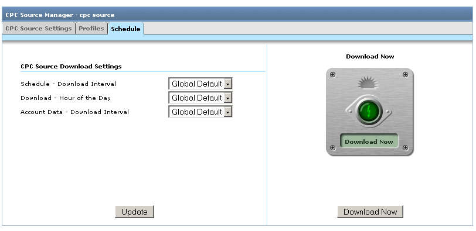

每次点击费用来源 (Urchin 6.5+)
Urchin 6.5 新增了一种数据来源： 每次点击费用来源。 每次点击费用来源可以自动从外部来源提取每次点击费用广告系列数据，这一点与日志源有些相似。 在与日志源和过滤器等现有配置文件进行关联后，每次点击费用来源即可自动将每次点击费用数据纳入 Urchin 报告中。 您可以为 Google AdWords (Urchin 6.5+) 和 Yahoo! Search Marketing (Urchin 6.6+) 创建每次点击费用来源。
请注意： 受功能所限，AdWords 简化版帐户无法使用每次点击费用来源。 要使用每次点击费用来源，您需要将 AdWords 帐户升级为标准版。
6.500 升级到 6.501 的重要说明： 从 6.500 升级到 6.501 时，您必须人工删除原有的每次点击费用数据。 为此，请删除下列目录中的全部内容：
<path_to_urchin_6500_installation>/data/cpc/... <path_to_urchin_6500_installation>/data/history/cpc/...
每次点击费用来源管理器
您可以在“配置”>“Urchin 配置文件”部分中找到“每次点击费用来源管理器”部分 (Urchin 6.5 +)。

“每次点击费用来源管理器”中列有当前 Urchin 实例中配置的所有每次点击费用来源，其中还提供了相应用户界面控件，供管理员创建并修改每次点击费用来源。
创建新的每次点击费用来源
要添加并配置新的每次点击费用来源，请点击“每次点击费用来源管理器”右上角的“添加”按钮。

这样做会启动“添加每次点击费用来源向导”，引导您完成添加/配置每次点击费用来源的所有步骤。
在向导的第一个步骤中，请填写下列数据：
- 可选帐户 - 指定要与新添加的每次点击费用来源相关联的帐户（仅适用于“数据中心模式”）。
- 每次点击费用来源名称 – 输入每次点击费用来源的名称；
- 每次点击费用来源类型：
Google AdWords
电子邮件* - 目前所访问的 AdWords 帐户的登录电子邮件地址，或“我的客户中心”(MCC) 帐户的登录信息；
- 密码* – 登录帐户的密码；
开发人员令牌 – 用来识别 AdWords API 授权开发人员身份的唯一字符串（可选字段）。Urchin 提供了默认开发人员令牌，因此，除非您希望使用自己的开发人员令牌，否则不用填写此字段。
应用程序令牌 – 访问 AdWords API 时使用的应用程序令牌。 与开发人员令牌一样，您可以将此字段留空。
- 客户电子邮件 – 在使用 MCC 登录信息（电子邮件属于 MCC 帐户登录信息）时，需要填写所访问的客户帐户的登录电子邮件地址。
客户 ID – 在使用 MCC 登录信息时，需要填写所访问的 AdWords 帐户的客户 ID（格式为 123-456-7890 的数字；位于 Google AdWords 页面右上角）。 此信息可用于替代客户电子邮件。
要验证每次点击费用来源设置，请点击测试每次点击费用来源按钮。

Yahoo! Search Marketing
- 用户名* - 所访问的 YSM 帐户的用户名称， 可以是广告客户的电子邮件地址，或代表广告客户访问报告的代理机构的电子邮件地址。
- 密码* - 所访问的 YSM 帐户的密码；
- 主帐户 ID* - 广告客户的主帐户 ID；
- 帐户 ID* - 广告客户的帐户 ID；
- 许可密钥 - 登录用户（广告客户或代理机构）的许可密钥。
- 代表用户名 - 广告客户的代表用户名， 只有在提供的是代理机构用户名而非广告客户用户名时，才需要填写此字段（可选）；
- 代表密码 - 广告客户的代表密码（可选）。
点击'完成'按钮完成此过程。

修改每次点击费用来源
添加每次点击费用来源之后，您可以修改其设置、将其删除或安排下载时间。

要修改现有每次点击费用来源设置，请点击要修改的项目旁的“修改”按钮。

您可以修改 AdWords 或 YSM 帐户的登录设置，也可允许或禁止对每次点击费用来源进行下载。 请注意： 即使您选择禁止以后下载报告，与此每次点击费用来源相关联的配置文件还是会继续使用已经下载的报告。
在'配置文件'标签中，您可以将每次点击费用来源关联到一个或多个现有的配置文件， 不过，您只能从当前 Urchin 帐户中选择要关联的配置文件。 来自关联每次点击费用来源的每次点击费用数据将会显示在相关配置文件的报告中。

为每次点击费用来源安排下载日程
在修改每次点击费用来源页面的安排日程标签上，您可以定义每次点击费用来源的下载设置：
- 调度 - 下载间隔 – 每次点击费用下载工作可分为两个不同的阶段。 在第一个阶段中，系统会验证每次点击费用凭据，并向每次点击费用服务器发出报告请求。 在第二个阶段，系统会定期检查报告的状态，直至确认报告已准备就绪。 在开始实际下载报告后，第二个阶段即告结束。 取决于帐户中的广告系列数量、检索的数据量、服务器目前的负载量等因素，服务器可能需要一些时间才能提供可下载的报告。此时间间隔将决定 Urchin 在收到下载请求后，需要多长时间才会开始检查是否有报告可供下载。 一般来说，如果帐户规模庞大，点击流量非常高，建议最好将此间隔设为较高的数值。
- 下载 - 一天中的小时 – 您可以在这里配置应在一天中的什么时段下载此每次点击费用来源的更新报告。 重要提示： 由于系统是以每天（而不是每小时）为单位提取每次点击费用数据，因此我们强烈建议您在 AdWords 或 YSM 帐户所属时区的一整天结束后，至少等候两小时再进行下载， 这样可确保 AdWords 和 YSM 服务器能获得当天的所有每次点击费用数据。 对于涉及每次点击费用来源的配置文件，最好安排在每次点击费用数据下载完毕后才进行处理， 这样可确保您在报告中看到最新的每次点击费用数据。
- 帐户数据 - 下载间隔（仅适用于 Urchin 6.6+ 中的 AdWords 帐户） - 使用此选项可设置 AdWords 帐户结构下载的时间间隔。 只有在下载 AdWords 帐户结构之后，您才可以查看“广告系列”和“关键字”元数据，或使用关键字生成工具、复制广告系列工具和 AdWords 标记管理工具。

在“全局设置”页面的“每次点击费用来源更新”标签上，您可以定义默认的全局每次点击费用来源下载设置。